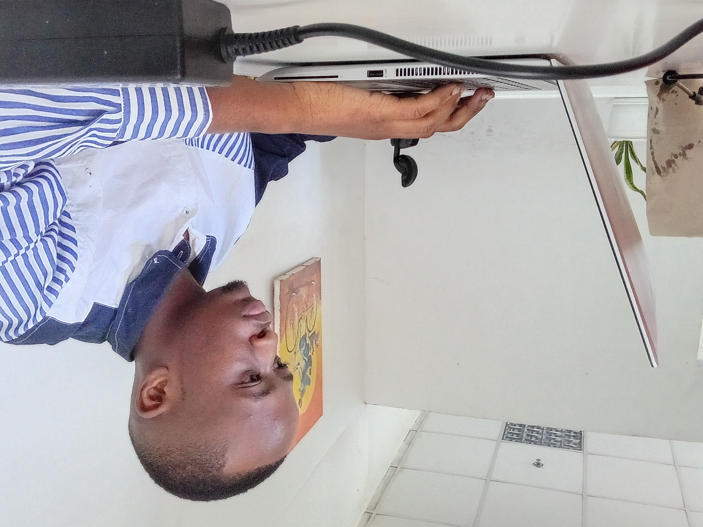

Information Technology Student | Software Development Enthusiast | Web Technologies Explorer

Eric Shoo
Erick Rogathe Shoo is a Tanzanian Information Technology student passionate about software development, web technologies, and digital innovation. He is committed to using technology to solve real-world problems and develop useful digital solutions.
He is currently pursuing Information Technology studies at the National Institute of Transport (NIT) in Tanzania. His technical skills and learning interests include PHP, C, C#, Python, HTML, CSS, JavaScript, and database management systems. He is also interested in software engineering, system analysis and design, and backend web development.
In addition to his academic journey, Erick is dedicated to building practical projects and continuously improving his programming skills. His goal is to become a professional backend web developer and software engineer. He aspires to create reliable and user-friendly systems, provide IT services, and develop innovative digital products that help businesses and communities grow.
Pursuing Information Technology studies, developing knowledge in programming, computer systems, database management, and software development.
Building practical programming skills using PHP, C, C#, Python, HTML, CSS, and JavaScript. Learning to develop websites, database-driven applications, and software solutions.
Practicing software development through personal projects involving database management, student registration systems, web applications, and backend development. Focused on improving problem-solving skills and creating practical digital solutions.
"Technology is the key to unlocking the future. I am committed to learning, innovating, and creating digital solutions that make a difference."
- Erick Rogathe ShooPassionate About Technology, Software Development, and Digital Innovation